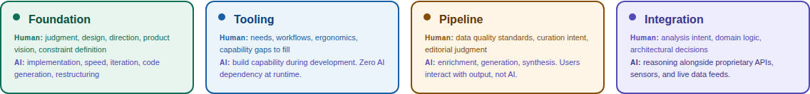
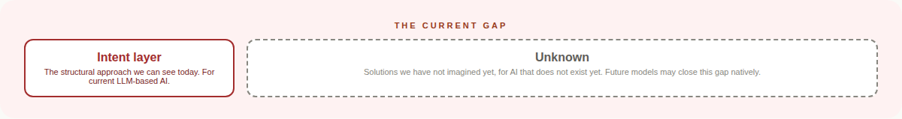

Stop Calling It Artificial¶
Start Building WITH Intelligence.
As long as we call it Artificial Intelligence, we give ourselves permission to skip the communication infrastructure we would build for any human colleague. The HIP Charter starts with a different premise.
You have felt this. You typed something into an AI tool, got something back that was not quite what you meant, and spent the next twenty minutes trying to explain the gap between what you said and what you actually wanted. That gap is not a bug. It is a structural problem. And the word "artificial" is part of why it exists.
The Premise¶
There is just intelligence. Two forms of it exist. The question of how they work together matters.
The word "artificial" frames AI as subordinate. As a tool. As something less than intelligence. That framing has consequences. It gives you permission to skip the onboarding you would give a new team member. To skip the shared context. To skip the structural protocols that make any collaboration between intelligences work.
We have had intelligence on this planet for millennia. Human intelligence. And we have spent that entire time building communication infrastructure for it. Gestures became spoken language. Spoken language became writing. Writing became contracts. Contracts became laws. Laws became digital protocols.
We have never built that infrastructure for a non-human intelligence, because we have never had to. Now we do. And the first step is to stop calling it "artificial."
| With "Artificial" | With "Just Intelligence" |
|---|---|
| You command it | You partner with it |
| You prompt it | You communicate with it |
| You wrap a UI around it | You architect systems for two intelligences |
| You govern it with policies it cannot read | You build structural protocols both sides can enforce |
Four Patterns of Partnership¶
What does it look like when you actually build this way? After a year of daily practice across eight products and thousands of commits, four patterns kept emerging.

-
Foundation
AI as Build Partner. A developer pair-programming with GitHub Copilot. An architect sketching while Claude Code builds. Human steers, AI implements.
-
Tooling
Human-First, Zero AI Dependency. AI built it, but AI is not in it. If every API disappeared, these products still work.
-
Pipeline
AI-Enhanced Systems. Zillow descriptions. Spotify playlists. Google Maps traffic. Users never see the AI.
-
Integration
AI as Collaborative Component. Bloomberg Terminal. Tesla Autopilot. AI works alongside live data. Swap the model, the architecture survives.
These are not a hierarchy. They are petals of a bloom. The overlaps create depth. The center is full partnership. 15 positions on the map.
The Gap at Every Pattern¶
At every pattern, the same structural problem appears. The distance between what the human means and what the AI does.

This is the Intent Layer. Not a product. Not a specification. A gap. It permeates every pattern like gravity in physics: everywhere, not in one place.
This gap exists today, with current LLM-based models. Future architectures may close it. But today, millions of people are building across these patterns with the gap wide open.
Three Concepts, One Thesis¶
| Concept | What it answers | Level |
|---|---|---|
| Just Intelligence | WHY you design this way | Philosophy |
| The HIP Charter | HOW you design this way | Framework |
| The Intent Layer | WHAT is missing at every pattern | Gap |
Just Intelligence without the charter is philosophy with no blueprint. The charter without Just Intelligence is engineering with no soul. The Intent Layer without both is a problem statement with no direction. Together, they are inseparable.
This charter describes what we can see in March 2026. The petals may change. The Intent Layer may close. Anyone who claims their AI framework is permanent in 2026 is either not paying attention or not being honest.
Read the full charter → How this charter was made → About the author →
Part of the From Instinct to Intent™ Series¶
| Article | What it establishes |
|---|---|
| Discovering Intent | The gap exists |
| Languages Designed for Humans | Instance One: programming languages |
| Engine vs Steering Wheel | The gap is architecture-agnostic |
| The HIP Charter | The framework, the premise, and the evidence |
© 2026 Nikhil Singhal. Published by AI Trust Commons. Licensed under CC BY 4.0.